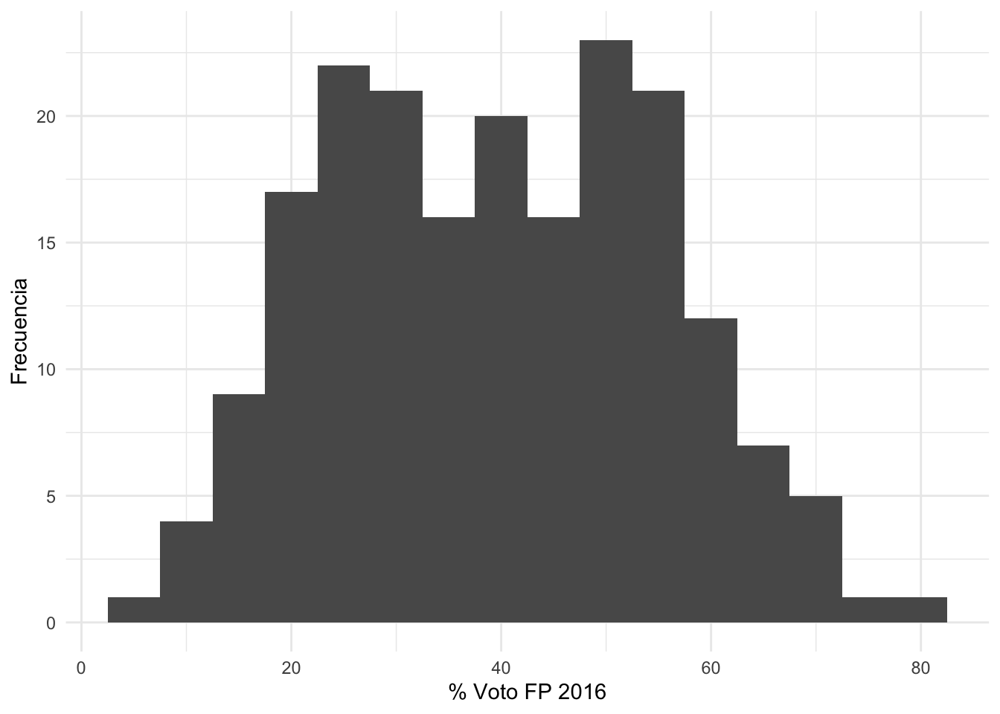
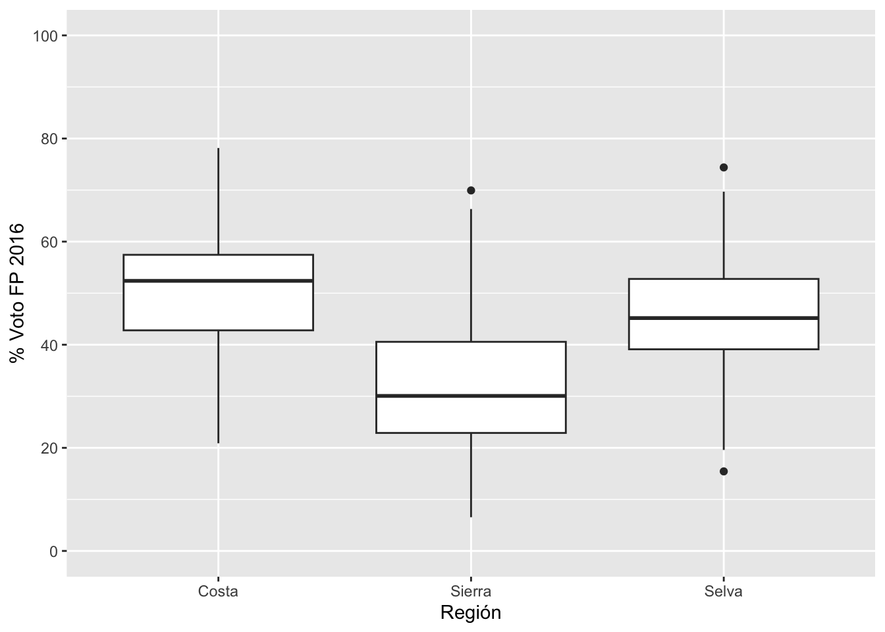
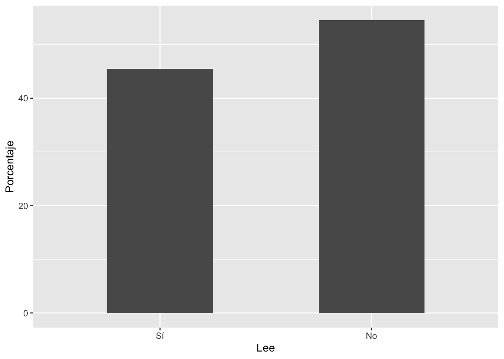
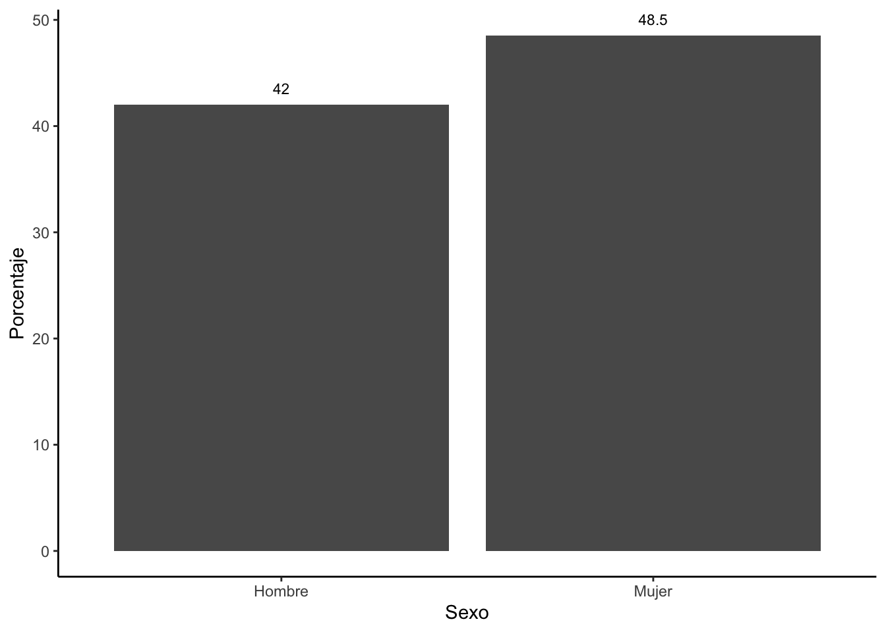
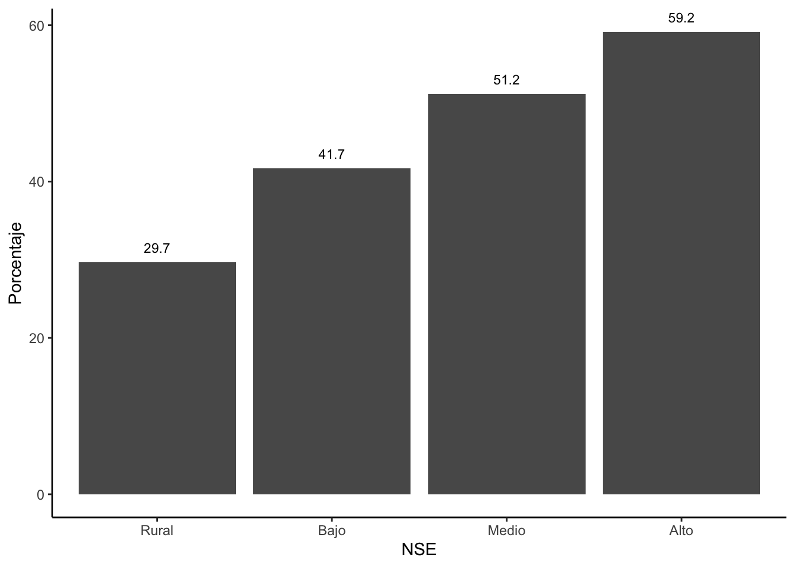
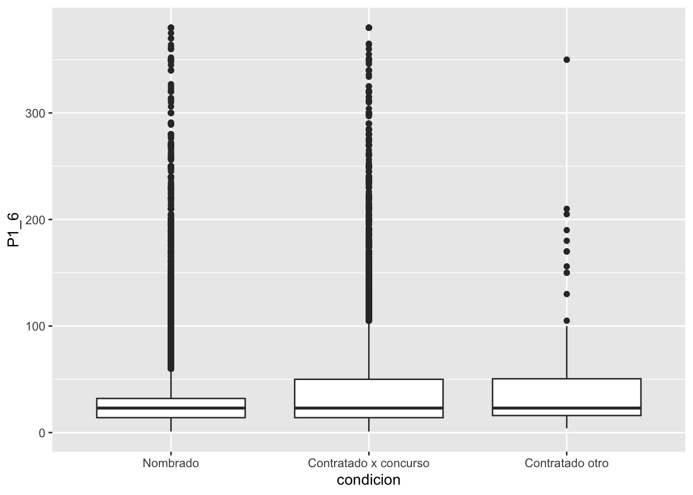
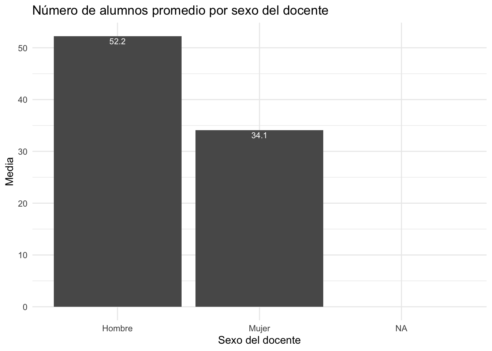

Visualización
library(rio)
res2016 = import("resultados2016.xlsx")
Una de las tareas más comunes en el manejo de datos es la
visualización de los resultados. En R hay dos maneras de proceder. La
primera es usar los comandos de base de R. La otra es usar una librería
ggplot2 que permite una mayor flexibilidad en la producción
y estética de los gráficos.
Para esto se carga la librería ggplot2. Esta tiene un
comando ggplot en el que se define los aspectos del
gráfico. Por ejemplo, para graficar una variable numérica, como el
porcentaje de voto a FP por provincia, se puede producir un
histograma.
Dentro de este comando se define la base de datos y la variable que
se va a graficar. Luego se van agregando capas. La primera define el
tipo de gráfico. Usamos geom_histogram para producir el
histograma y se especifica el ancho de columna. Luego se define las
etiquetas de ejes y el tema del gráfico.
Se observa que el gráfico de porcentaje de votos a Fuerza Popular es
aproximadamente simétrico, tal como indicaban la similitud entre media y
mediana.
library(ggplot2)
ggplot(res2016, aes(x=fp))+
geom_histogram(binwidth = 5)+
xlab("% Voto FP 2016") +
ylab("Frecuencia")+
theme_minimal()

Habíamos encontrado que la media y la mediana del porcentaje de voto
al Frente Amplio diferían. Esto lo comprobamos produciendo el histograma
de esta variable.
ggplot(res2016, aes(x=fa))+
geom_histogram(binwidth = 5)+
geom_vline(xintercept = 29.3, color = "red")+
geom_vline(xintercept = 24.5, color = "green")+
xlab("% Voto FA 2011")+
ylab("Frecuencia")+
theme_classic()

Otro gráfico útil en la visualización es el llamado “boxplot” o
“gráfico de cajas”. Este tipo de gráficos sirve bastante para comparar
entre grupos de otra variable.
Para producir un gráfico de cajas usamos la especificación
geom_bloxplot() y podemos definir los límites y saltos del
eje Y. Este gráfico nos muestra que el distrito con el menor porcentaje
de voto a FP tuvo un poco más de 5% y que el máximo fue de casi 80%.
También muestra que la votación mediana fue de 40%. Los límites de la
caja son el cuartil 25 y el cuartil 75.
ggplot(res2016, aes(y=fp))+
geom_boxplot()+
ylab("% Voto FP 2011")

El aspecto más útil de los gráficos de cajas es la comparación. Por
ejemplo, si se quisiera comparar el voto a Fuerza Popular entre
departamentos del país. Para hacer esto se debe definir que la variable
en el eje Y sea el porcentaje de votos a Fuerza Popular “fp” y en el eje
X la variable que define los departamentos “dpto”.
En el gráfico se pueden hacer varias comparaciones. Lo más importante
es comparar medianas y anchos de cajas entre departamentos. Los puntos
aislados son “outliers” o valores extremos, que se calculan
automáticamente y se grafican.
Este gráfico, sin embargo, es muy desagragado.
ggplot(res2016, aes(y=fp, x=dpto))+
geom_boxplot()+
scale_y_continuous(limits = c(0, 100), breaks = seq(0, 100, 10))+
ylab("% Voto FP 2011")+
xlab("Departamento")+
theme_minimal()

Si se quisiera comparar entre regiones (costa, sierra y selva), se
tendría que crear esta variable, a partir de la variable “dpto”.
Recodificando variables
library(tidyverse)
res2016 = res2016 %>%
mutate(region = case_when(
dpto=="AMAZONAS"~3,
dpto=="ANCASH"~2,
dpto=="APURIMAC"~2,
dpto=="AREQUIPA"~2,
dpto=="AYACUCHO"~2,
dpto=="CAJAMARCA"~2,
dpto=="CUSCO"~2,
dpto=="CALLAO"~1,
dpto=="HUANCAVELICA"~2,
dpto=="HUANUCO"~3,
dpto=="ICA"~1,
dpto=="JUNIN"~2,
dpto=="LA LIBERTAD"~1,
dpto=="LAMBAYEQUE"~1,
dpto=="LIMA"~1,
dpto=="LORETO"~3,
dpto=="MADRE DE DIOS"~3,
dpto=="MOQUEGUA"~1,
dpto=="PASCO"~2,
dpto=="PIURA"~1,
dpto=="PUNO"~2,
dpto=="SAN MARTIN"~3,
dpto=="TACNA"~1,
dpto=="TUMBES"~1,
dpto=="UCAYALI"~3
))
res2016 %>%
count(Region = region, name="Frecuencia")
## Region Frecuencia
## 1 1 49
## 2 2 104
## 3 3 43
La variable creada es una variable de tipo “numérico”. En R existe
otro tipo de variable llamado “factor”. Podemos convertir cualquier
variable a una de factor y etiquetar cada valor.
library(forcats)
res2016 = res2016 %>%
mutate(region2 = factor(region, labels=c("Costa", "Sierra", "Selva")))
Ahora, procedemos a producir el gráfico de cajas de porcentaje de
voto a Fuerza Popular por región.
ggplot(res2016, aes(y=fp, x=region2))+
geom_boxplot()+
scale_y_continuous(limits = c(0, 100), breaks = seq(0, 100, 20))+
ylab("% Voto FP 2016")+
xlab("Región")+
theme_get()

Se observa en este gráfico que el voto mediano a Fuerza Popular fue
mayor entre provincias de la costa, seguido por la selva y luego la
sierra. Este mismo patrón se observa si calculáramos la media del
porcentaje de voto provincial a Fuerza Popular por región.
res2016 %>%
group_by(region2) %>%
summarise(mean(fp), sd(fp))
## # A tibble: 3 × 3
## region2 `mean(fp)` `sd(fp)`
## <fct> <dbl> <dbl>
## 1 Costa 49.6 13.6
## 2 Sierra 32.5 14.0
## 3 Selva 45.0 13.6
Caso 1: ¿los peruanos leen?
Pregunta: Existe un sentido común que indica que los peruanos no
leen. ¿Es aquello cierto? ¿Existen diferencias de género o
socioeconómicas en los niveles de lectura?
Para responder a esta pregunta, usaremos la Encuesta Nacional de
Lectura de 2022.
library(rio)
enl = import("~/Library/CloudStorage/GoogleDrive-arturo.maldonado@pucp.pe/Mi unidad/A Cursos/Estadistica_1/Data/ENL2022/ENL2022.sav")
Esta encuesta tiene una pregunta que indaga directamente (P408).
Cuando se importa los datos a R, esta variable se importa como una
variable numérica, cuando en realidad, es una variable de tipo
factor.
Se usa el comando mutate para crear una nueva variable y
el comando factor para transformar la variable numérica a
una de factor con sus respectivos labels.
library(tidyverse)
enl = enl %>%
mutate(lee = factor(P408, labels=c("Sí", "No")))
Descripción de variables de factor
Para describir variables que no son numéricas, podemos producir
tablas de distribución de frecuencias. Por ejemplo, podemos describir la
variable “lee” de la base de datos. Podemos usar el comando
count para calcular la tabla de distribución de frecuencias
de esta variable. Se guarda esta tabla en un objeto “tabla1”.
tabla1 = enl %>%
filter(lee == "Sí" | lee == "No") |>
count(Lee = lee, name="Frecuencia")
tabla1
## Lee Frecuencia
## 1 Sí 18929
## 2 No 22714
Para calcular los porcentajes, se puede agregar a la tabla una
columna “Porcentaje” con el cálculo de la “Frecuencia” (columna
existente) ente la suma total de las frecuencias. Se encuentra que
Fuerza Popular ganó en el 57% de provincias del Perú.
tabla1 = tabla1 %>%
mutate(Porcentaje = (Frecuencia / sum(Frecuencia)*100 ))
tabla1
## Lee Frecuencia Porcentaje
## 1 Sí 18929 45.45542
## 2 No 22714 54.54458
Para graficar una variable de tipo cualitativa (o de factor en el
lenguaje de R), se debe usar, por ejemplo, un gráfico de barras. Podemos
graficar estos porcentajes.
Para esto usamos la librería ggplot2, pero ahora no
realizaremos un histograma (no usaremos geom_histogram),
sino barras, con geom_bar. Dentro de este comando se añade
stat="identity para indicar que R no calcule nada y solo
use los datos de “tabla”.
library(ggplot2)
graf1 = ggplot(tabla1, aes(x=Lee,y=Porcentaje))+
geom_bar(stat="identity", width=0.5)
graf1

La encuesta también incluye la pregunta P209 sobre género. Esta
variable se importa como una numérica, por lo que nuevamente la
transformamos en una variable de tipo factor “sexo” con sus
etiquetas.
enl = enl %>%
mutate(sexo = factor(P209, labels=c("Hombre", "Mujer")))
Ahora usamos esta variable para calcular las frecuencias y
porcentajes por grupos de sexo.
tabla2 = enl %>%
filter(lee == "Sí" | lee == "No") %>%
group_by(sexo) %>%
count(Lee = lee, name="N")%>%
mutate(total = sum(N),
Por = N / total * 100)
tabla2
## # A tibble: 4 × 5
## # Groups: sexo [2]
## sexo Lee N total Por
## <fct> <fct> <int> <int> <dbl>
## 1 Hombre Sí 8307 19759 42.0
## 2 Hombre No 11452 19759 58.0
## 3 Mujer Sí 10622 21884 48.5
## 4 Mujer No 11262 21884 51.5
La tabla nos indica los porcentajes de los que sí leen y los que no
leen por sexo. Como solo queremos graficar los porcentajes de los que sí
leen, podemos eliminar las filas de los que no leen.
tabla2 = tabla2[-c(2,4),]
Con esta tabla reducida, podemos graficas usando ggplot.
Ahora agregamos la capa geom_text para incluir el dato del
porcentaje dentro del gráfico.
graf2 = ggplot(tabla2, aes(x=sexo, y=Por))+
geom_bar(stat="identity")+
geom_text(aes(label=paste(round(Por, 1))), vjust=-1, size=3)+
labs(x="Sexo", y="Porcentaje")+
theme_classic()
graf2

La base de datos incluye una variable “nse”, que refiere al nivel
socioeconómico de la persona que responde. Este nivel socioeconómico
está categorizado en 4 niveles.
enl = enl %>%
mutate(nse1 = factor(nse, labels=c("Rural", "Bajo", "Medio", "Alto")))
Pasamos a calcular los porcentajes de lectura por los 4 niveles
socioeconómicos.
tabla3 = enl %>%
filter(lee == "Sí" | lee == "No") %>%
group_by(nse1) %>%
count(Lee = lee, name="N")%>%
mutate(total = sum(N),
Por = N / total * 100)
tabla3
## # A tibble: 8 × 5
## # Groups: nse1 [4]
## nse1 Lee N total Por
## <fct> <fct> <int> <int> <dbl>
## 1 Rural Sí 1431 4819 29.7
## 2 Rural No 3388 4819 70.3
## 3 Bajo Sí 8684 20815 41.7
## 4 Bajo No 12131 20815 58.3
## 5 Medio Sí 4254 8301 51.2
## 6 Medio No 4047 8301 48.8
## 7 Alto Sí 4560 7708 59.2
## 8 Alto No 3148 7708 40.8
Nuevamente eliminamos las filas de los porcentajes de aquellos que no
leen.
tabla3 = tabla3[-c(2,4,6,8),]
Y graficamos los porcentajes de los que sí leen por niveles
socioeconómicos.
graf3 = ggplot(tabla3, aes(x=nse1, y=Por))+
geom_bar(stat="identity")+
geom_text(aes(label=paste(round(Por, 1))), vjust=-1, size=3)+
labs(x="NSE", y="Porcentaje")+
theme_classic()
graf3

Tarea
Se encontró que una mayor proporción de mujeres que hombres lee.
¿Cuántos libros impresos y digitales lee el peruano promedio? ¿Existen
diferencias entre hombres y mujeres entre el promedio de libros impresos
y digitales que leen? ¿Entre niveles socioeconómicos?
Caso 2: Encuesta Nacional Docente 2020
Cada dos años, el Ministerio de Educación realiza una encuesta a una
muestra de docentes de educación básica en el Perú. La última disponible
fue hecha en 2020, en medio de la pandemia del COVID-19. Las bases de
datos y cuestionarios de esta encuesta se encuentran disponibles aquí.
En esta ubicación se encuentra la base de datos, que puede ser
descargada y leída en R con el siguiente código.
library(rio)
endo2020 = import("bases/ENDO_REMOTO_2020.dta")
#CAMBIAR A PROPIO DIRECTORIO DE TRABAJO
Estimación puntual
De una variable numérica, la medida de tendencia central más útil es
la media. La encuesta a docentes incluye la pregunta:
- ¿A cuántos estudiantes le brinda acompañamiento como docente de aula
en esta IE? (Ver cuestionario)
De esta pregunta podemos preguntarnos: ¿A cuántos alumnos en promedio
acompaña el docente peruano en aula? Esta encuesta tiene una pregunta
que nos permite calcular esta media y la desviación estándar.
library(dplyr)
library(tidyverse)
endo2020 %>%
summarize(Media =mean(P1_6, na.rm = T), Desv.Std = sd(P1_6, na.rm = T))
## Media Desv.Std
## 1 39.98644 50.76707
Es decir, un profesor promedio en Perú acompaña aproximadamente a 40
alumnos en aula. ¿Existen diferencias en el número promedio de alumnos
que acompañan docentes hombres y docentes mujeres?
Cuando se importa la base de datos, la variable sexo, P1_1, es
definida como numérica.
str(endo2020$P1_1)
## num [1:28216] 1 2 2 NA NA 2 1 NA NA NA ...
## - attr(*, "label")= chr "Sexo"
## - attr(*, "format.stata")= chr "%12.0g"
## - attr(*, "labels")= Named num [1:2] 1 2
## ..- attr(*, "names")= chr [1:2] "Masculino" "Femenino"
La podemos transformar a una variable de tipo factor.
endo2020 = endo2020 %>%
mutate(sexo = factor(P1_1, labels=c("Hombre", "Mujer")))
Calculamos los datos para hombres y mujeres.
tabla1 = endo2020 %>%
group_by(sexo) %>%
summarize(Media = mean(P1_6, na.rm = T),
Desv.Std = sd(P1_6, na.rm = T),
Mediana = median(P1_6, na.rm = T))
tabla1
## # A tibble: 3 × 4
## sexo Media Desv.Std Mediana
## <fct> <dbl> <dbl> <dbl>
## 1 Hombre 52.2 60.4 28
## 2 Mujer 34.1 44.2 22
## 3 <NA> NaN NA NA
Se encuentra que los docentes hombres acompañan, en promedio, a 52
alumnos, mientras que las docentes mujeres acompañan a 34 alumnos, una
diferencia de 18 alumnos en promedio.
Todos estos resultados son puntuales y aplican para la muestra de
28,216 profesores.
Para una comparación gráfica, se puede usar boxplot.
library(ggplot2)
ggplot(endo2020, aes(y=P1_6, x=sexo))+
geom_boxplot()
## Warning: Removed 9266 rows containing
## non-finite outside the scale range
## (`stat_boxplot()`).

endo2020 = endo2020 %>%
mutate(condicion = factor(P1_7, labels=c("Nombrado", "Contratado x concurso", "Contratado otro")))
tabla2 = endo2020 %>%
group_by(condicion) %>%
summarize(Media = mean(P1_6, na.rm = T),
Desv.Std = sd(P1_6, na.rm = T),
Mediana = median(P1_6, na.rm = T))
tabla2
## # A tibble: 4 × 4
## condicion Media Desv.Std Mediana
## <fct> <dbl> <dbl> <dbl>
## 1 Nombrado 36.9 48.0 23
## 2 Contratado x concurso 43.7 53.6 23
## 3 Contratado otro 50.6 66.1 23
## 4 <NA> NaN NA NA
library(ggplot2)
library(tidyverse)
endo2020 %>%
drop_na(P1_6) %>%
ggplot(aes(y=P1_6, x=condicion))+
geom_boxplot()

ggplot(subset(endo2020, !is.na(P1_6)), aes(y=P1_6, x=condicion))+
geom_boxplot()

Si se quiere hacer un gráfico de barras simples para mostrar la media
del número de alumnos por sexo del profesor, se puede usar:
ggplot(tabla1, aes(x=sexo, y=Media)) +
geom_bar(stat = "identity") +
ggtitle("Número de alumnos promedio por sexo del docente") +
xlab("Sexo del docente") +
geom_text(aes(label=round(Media,1)), vjust=1.30, color="white", size=3)+
theme_minimal()
## Warning: Removed 1 row containing missing
## values or values outside the scale
## range (`geom_bar()`).
## Warning: Removed 1 row containing missing
## values or values outside the scale
## range (`geom_text()`).

¿Cómo se pueden extrapolar estos resultados al universo de profesores
peruanos?
Estimación por intervalos
Tanto la media muestral, como la proporción muestral, son
estimaciones puntuales, basados en los resultados de la muestra. Es
decir, estas son estimaciones correspondientes a las 28,216
observaciones que son parte de este estudio. Sin embargo, esta muestra
forma parte de un universo o población (el conjunto de profesores del
Perú), del que seguramente se quiere decir algo.
El mismo razonamiento aplica a una encuesta de opinión convencional.
La ficha técnica de una encuesta menciona, generalmente, el tamaño de
muestra y la población a la que se busca representar. También se puede
encontrar el margen de error (+/- 2.8%) y el nivel de confianza
(generalmente de 95%).(Ver, por ejemplo, la encuesta
de opinión de agosto 2023 de Ipsos.
El proceso mediante el cual se parte de una muestra para decir algo
de un universo o población es un proceso de inferencia y es parte de la
estadística inferencial. La estadística inferencial introduce la
incertidumbre en los estimados, debido al hecho de
estar trabajando con una muestra y no con el total de observaciones del
universo.
Un breve paseo por las probabilidades
Partimos del hecho que en el común de las investigaciones uno tiene
que seleccionar un conjunto de observaciones que son parte del total,
que es muy costoso e ineficiente hacer un estudio de la población
completa. La analogía es, por ejemplo, que para un análisis de sangre se
extrae una “muestra” de sangre y no el total de sangre del cuerpo.
A esto le sumamos el hecho que nuestras herramientas de recojo de
información son imperfectas. Un estudio transversal, por ejemplo,
debería recoger información de los individuos en un corte en el tiempo,
sin embargo, muchos estudios no son una “foto del momento”, pues las
observaciones toman tiempo y abarcan horas, días o semanas, sino
meses.
Es por este motivo que para un estudio se selecciona “una” muestra,
un conjunto de observaciones que son una fracción del total. Esta
selección se hace siguiendo procedimientos aleatorios, de tal manera que
cualquier unidad del universo tenga la misma probabilidad de ser
seleccionada.
El punto es que esta única muestra es solo una de las múltiples
muestras teóricas que se podrían seleccionar de un universo
determinado.
Partamos de un ejemplo muy simple. Para un universo de 5 personas, se
pueden extraer 10 muestras de tamaño 2 diferentes.

La fórmula para calcular el número de muestras probables es la de
combinatorias, que incluye el operador factorial. Si aplicamos esta
fórmula a un ejemplo de un universo más grande, por ejemplo, un salón de
clase de 50 alumnos, donde se quiere saber cuántas muestras diferentes
de tamaño 4 se pueden extraer. Según la fórmula:
\[
\frac{50!} {(50-4)! 4!} = \frac{50!} {46! 4!} = \frac{50*49*48*47}
{4*3*2} = 230,300
\]
Para un sondeo de opinión, donde el universo son 24 millones de
individuos y se quiere saber cuántas muestras diferentes de tamaño 1,500
se pueden extraer, este número de muestras probables es muuuuy
grande.
Volviendo al ejemplo muy simple de 5 personas donde se quiere extraer
una muestra de 2 y se quiere inferir los datos de la muestra de dos
variables: sexo y edad.
Se tiene un universo de 5 individuos, cada uno con su sexo y edad. En
la población la proporción de hombres es de 60% y la media de edad es de
34 años.

Si queremos extraer una muestra de tamaño de 2 de ese universo, se
tienen 10 posibles muestras, cada una tendrá una aproximación de la
proporción de hombres y de la media de edad. Dependiendo de qué muestra
de todas las posibles sea la que se observa, los estadísticos serán una
aproximación de los parámetros poblacionales.
En el caso de la proporción de hombres, se puede tabular los
resultados de cada muestra probable.
| 0% |
1 |
X |
| 50% |
5 |
XXXXX |
| 100% |
4 |
XXXX |
Incluso se podría calcular un promedio de todas esas proporciones
muestrales (100+50+100+…+50/10), y ese resultado sería 65%, un resultado
algo cerca de la proporción poblacional de 60%.
Este mismo procedimiento se podría hacer para todas las 230,300
muestras probables de tamaño 4 de un universo de 50 alumnos. Cada uno de
los 50 alumnos será hombre o mujer y la proporción poblacional de
hombres se puede calcular en ese total. A su vez, cada muestra de 4,
tendrá una proporción muestral que tendrá valores (0 si no hay ningún
hombre, 25% si hay 1 hombre, 50% si hay 2 hombres, 75% si hay 3 hombres
y 100% si todos son hombres). Finalmente, se puede contar cuántas de las
230,300 muestras probables tuvieron 0%, 25%, 50%, 75% y 100% de hombres.
Esta distribución se llama “distribución de
muestreo”.
Si quisiéramos ampliar el tamaño de muestra a 10, entonces los
resultados posibles serían, 0, 10, 20, 30, 40, 50, 60, 70, 80, 90 y
100%. También podríamos contar cuántas muestras tienen estos
resultados.
De un universo más grande, se puede plantear extraer muestras de
tamaño más grande. Por ejemplo, teóricamente se puede pensar que de un
universo de 20 millones, se pueden extraer casi infinitas muestras de
tamaño 1,500. Cada una de estas muestras tendrá un estadístico que será
una aproximación del parámetro. Los estadísticos de todas estas casi
infinitas muestras se pueden tabular y graficar.
Teorema del límite central
Este teorema muestra que la distribución de muestreo se
aproxima a una distribución normal, con centro en el parámetro,
en la medida que el tamaño de muestra aumenta.
Esto se puede mostrar gráficamente en el Tablero de Galton, ver aquí
Por lo tanto, la distribución de muestreo de N grandes para cualquier
variable seguirá las características de cualquier curva normal. Toda
curva normal es simétrica y sabemos que si desde el centro se desplaza 1
desviación estándar en ambas direcciones, entre esos límites estarán el
68.3% de todas las observaciones. Si se desplaza 2 desviaciones estándar
en ambas direcciones, se acumularían el 95.4% de todas las
observaciones. Con 3 desviaciones estándar hacia ambos lados, se
acumularía el 99.7% de todas las observaciones.

Traduciendo a la distribución de muestreo, la idea es que si se
tabulan y se hace un gráfico de barras de los resultados de todas las
muestras probables, se tendría una curva normal con centro en el
parámetro. Sabríamos que si desde ese centro nos desplazamos 2
desviaciones estándar en ambas direcciones, entre esos límites estarían
el 95% de todas las muestra probables.
Es altamente probable (95% probable) que si en una investigación se
extrae una sola muestra, esta sea parte del 95% de muestras posibles a
+/- 2 desviaciones estándar del parámetro. De la misma manera, es poco
probable (5% probable) que una sola muestra no esté a +/- 2 desviaciones
estándar del parámetro.
Estimación de intervalos de confianza
La distribución de muestreo es teórica, muy difícilmente se puede
calcular en la realidad. Regularmente tampoco sabemos los datos del
universo. Lo que tenemos a mano es 1 muestra observada.
Es decir, en un estudio de las muuuuuchas muestras probables, se
selecciona 1 muestra.
En el caso de la encuesta ENDO, por ejemplo, del universo de
profesores peruanos, se seleccionó 1 muestra de 28,216 observaciones, de
las muuuuchas muestras de 28,216 individuos de la población total.
Si teóricamente sabemos que en la distribución muestral, el 95% de
todas las muestras están a +/- 2 desviaciones estándar del centro, que
coincide con el parámetro poblacional, es muy probable que la única
muestra que se ha observado sea parte de ese conjunto. De hecho, se
puede decir que se tiene 95% de probabilidades de que sea parte de ese
grupo.
Por lo tanto, si a partir del estadístico muestral, se aplica esta
distancia de +/- 2 errores estándar, se tiene 95% de probabilidades que
entre esos límites se incluya al valor del parámetro. Para verlo de
manera más visual, en la siguiente figura se tiene la distribución de
muestreo teórica (y desconocida), donde se marca la región que acumula
el 95% de todas las muestras probables.
Más abajo se marca los resultados de 2 muestras observadas. La
primera proporción muestral subestima la proporción poblacional. La
segunda, por el contrario, sobreestima la proporción poblacional. En el
primer caso, si a partir del estadístico muestral se aplica +/- 1.96
errores estándar (línea horizontal en negrita), se observa que el
parámetro poblacional está incluido en esos límites.
Es probable, como en el segundo caso, que otra muestra probable,
cuando se le aplique el intervalo de +/- 1.96 errores estándar, no
incluya al parámetro. Se observa que la línea en negrita no incluye la
linea vertical entrecortada que marca el valor del parámetro
poblacional.

Sin embargo, sabemos que es mucho más probable (95% de
probabilidades) que si una muestra observada es parte del 95% de
muestras alrededor del parámetro, este intervalo incluya al parámetro
poblacional. A estos límites le llamamos “intervalos de confianza”.
En cualquier investigación solo se cuenta con una muestra observada,
cuyo estadístico muestral, sea una media o un proporción, es una
aproximación del parámetro poblacional.
Para poder extrapolar desde la muestra hasta la población, se tiene
que construir un intervalo de confianza alrededor del estadístico
muestral. Este intervalo se construye aplicando la “distancia” de +/-
1.96 errores estándar, para tener una confianza de 95% de incluir al
parámetro poblacional.
Si se está extrapolando para una variable numérica, mediante la
media, el error estándar (o se) es:
\[
se = 1.96 * \frac{s} {\sqrt{n}}
\]
Si se está extrapolando para una variable categórica, mediante una
proporción, el error estándar (o se) es:
\[
se = 1.96 * \sqrt{\frac{(p * (1-p))} {n}}
\]
A manera de resumen, la siguiente tabla nos muestra el parámetro, el
estadístico puntual y el error estándar para cada tipo de variable y
cómo se forma el intervalo de confianza.

En estas fórmulas, se usa el símbolo “t” y “z” para referir a las
distribuciones teóricas que se usan. Para fines prácticos, cuando la
muestra es grande, ambas distribuciones son iguales. El valor de “t” o
“z” depende del nivel de confianza que queremos. Es decir, de la
probabilidad que queremos de que el intervalo incluya al parámetro. De
esta manera:
Z al 90% = 1.645
Z al 95% = 1.96
Z al 98% = 2.326
Z al 99% = 2.576
¿Qué pasa con el IC cuando se quiere mayor confianza? ¿Se vuelve más
o menos preciso?
En el ejemplo del cálculo del promedio de alumnos que atiende los
profesores, se puede añadir el cálculo de los intervalos de confianza en
ambos casos, para hombres y mujeres. El comando para hacer esto es
ciMean que es parte de la librería lsr.
library(lsr)
ciMean(endo2020$P1_6, na.rm = T)
## 2.5% 97.5%
## [1,] 39.26358 40.7093
Si se calculan los intervalos de confianza por grupos, estos se
pueden comparar.
library(lsr)
ci_alumxsexo = endo2020 |>
group_by(sexo) |>
summarise(Media = mean(P1_6, na.rm=T),
min = ciMean(P1_6, na.rm=T)[1],
max = ciMean(P1_6, na.rm=T)[2]
)
ci_alumxsexo
## # A tibble: 3 × 4
## sexo Media min max
## <fct> <dbl> <dbl> <dbl>
## 1 Hombre 52.2 50.7 53.8
## 2 Mujer 34.1 33.3 34.8
## 3 <NA> NaN NA NA
Se encuentra que la media de alumnos que atiende un docente hombre
esta entre 50.7 y 53.8 alumnos, mientras que en el caso de las docentes
mujeres está entre 33.3 y 34.8 alumnos en aula.
¿Qué más se puede decir de esta comparación entre intervalos de
confianza? ¿Cómo graficar estos intervalos de confianza?
Bibliografía
